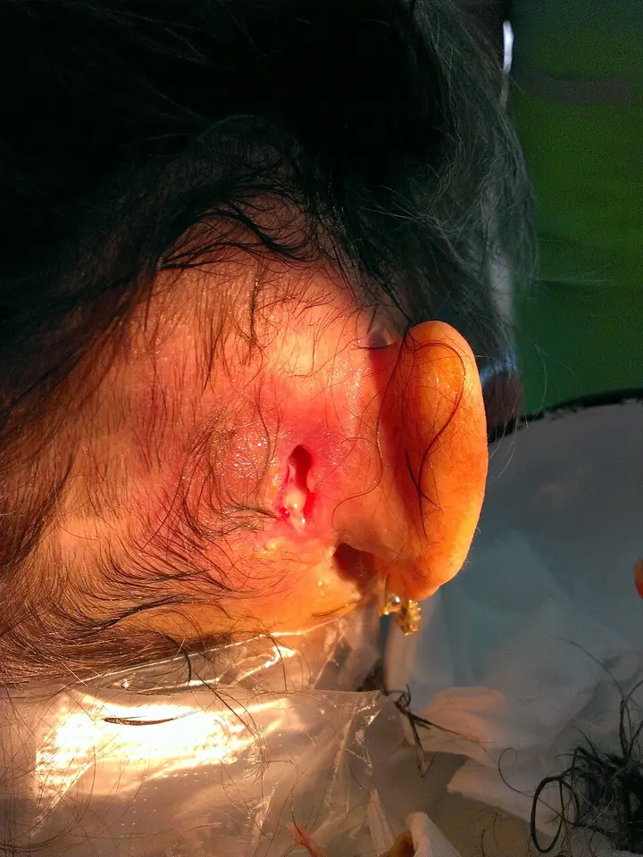

DX.2 — Otite moyenne aiguë
L’otite moyenne aiguë guérit le plus souvent seule en 3 jours, mais une mastoïdite, une méningite ou une paralysie faciale imposent l’hôpital S4. Le médecin réserve l’antibiotique immédiat à l’otite bilatérale avant 2 ans et à l’otite perforée, et il soulage toujours la douleur S1.
1. Définition
La Société suisse d’infectiologie (SSI) définit l’otite moyenne aiguë purulente comme la surinfection bactérienne de l’oreille moyenne, survenant dans les suites d’une infection des voies respiratoires supérieures S1. Le centre hospitalier universitaire vaudois (CHUV) la définit par un épanchement rétro-tympanique associé à des signes d’inflammation de l’oreille moyenne et à des symptômes d’infection aiguë S2.
2. Épidémiologie (Suisse, puis Europe)
Selon l’équipe pédiatrique du CHUV, jusqu’à un enfant sur quatre présente au moins une otite moyenne aiguë dans sa première année, et la proportion atteint 60 % à 3 ans S2. Le pic d’incidence se situe entre 6 et 24 mois ; la maladie touche un peu plus les garçons et culmine en automne et en hiver S2. L’otite reste une des causes principales de consultation dans la petite enfance et la première raison de prescrire un antibiotique en pédiatrie S2.
Au Danemark, une cohorte nationale de 52 755 enfants montre une incidence cumulée de 60,6 % à 7 ans S3. Dans cette cohorte, 38,8 % des enfants ont déjà fait une otite à 18 mois, et l’âge médian du premier épisode vaut 10 mois S3. Un premier épisode avant 6 mois y est associé aux épisodes récidivants, ce qui justifie une surveillance plus étroite de ces nourrissons S3.
La SSI rappelle que l’otite moyenne de l’adulte est rare et peu étudiée ; aucune donnée ne fixe donc sa prise en charge optimale S1. Le tableau suivant replace chaque chiffre dans sa population et sa mesure, puis la fenêtre des facteurs de risque précise leur poids pratique.
Chiffres d’incidence : population et mesure
| Chiffre | Population et mesure | Source |
|---|---|---|
| 1 enfant sur 4 dans la 1re année | Enfants, synthèse pédiatrique suisse 2023 | S2 |
| 60 % à 3 ans | Même synthèse, proportion cumulée | S2 |
| Pic entre 6 et 24 mois | Âge de plus forte incidence | S2 |
| 60,6 % à 7 ans | 52 755 enfants danois, entretiens maternels à 6 mois, 18 mois et 7 ans | S3 |
| 38,8 % à 18 mois | Même cohorte, au moins un épisode | S3 |
| Âge médian 10 mois | Premier épisode, quartiles 6 à 12 mois | S3 |
| Baisse de 22 %, puis de 19 % | Royaume-Uni, après le vaccin conjugué à 7 valences, puis à 13 valences | S2 |
Ces chiffres européens décrivent surtout l’enfant ; par déduction, le médecin ne doit pas les appliquer tels quels à l’adulte, que la SSI dit peu étudié S1S3.
Facteurs de risque et facteur protecteur
| Facteur | Effet | Conduite pratique |
|---|---|---|
| Fumée passive | Augmente le risque S2 | Conseiller l’arrêt du tabac au domicile |
| Crèche | Augmente le risque S2 | Informer les parents des signes d’alarme |
| Lolette au-delà de 6 mois | Augmente le risque S2 | Proposer le sevrage de la lolette |
| Atopie, anamnèse familiale positive | Augmentent le risque S2 | Noter ces terrains au dossier |
| Trisomie 21, fente palatine, immunodéficience | Augmentent le risque S2 | Surveiller de plus près chaque épisode |
| Allaitement exclusif pendant 6 mois | Protège jusqu’à 24 mois S2 | Encourager l’allaitement exclusif |
| Premier épisode avant 6 mois | S’associe aux récidives S3 | Revoir l’enfant après l’épisode |
3. Physiopathologie
L’infection virale des voies respiratoires supérieures provoque un œdème de la muqueuse du rhinopharynx, qui obstrue la trompe d’Eustache et bloque les sécrétions dans l’oreille moyenne S2. Les bactéries qui colonisent le rhinopharynx, comme le pneumocoque, migrent alors vers l’oreille moyenne et prolifèrent dans ces sécrétions stagnantes S2. Le pus s’accumule ensuite derrière le tympan, qui devient visible comme une membrane bombée à l’otoscopie S2.
Chez le petit enfant, la trompe d’Eustache est plus courte et plus horizontale ; cette anatomie favorise le passage des bactéries du rhinopharynx vers l’oreille moyenne S2. Les virus respiratoires dominent dans l’épanchement, car les picornavirus représentent plus de 50 % des identifications S2. La fenêtre des germes et de leurs particularités relie chaque bactérie à son tableau, et celle des résistances suisses explique le choix de la dose.
L’oreille moyenne et la trompe d’Eustache. Le schéma en couleurs montre le tympan, la chaîne des osselets, la caisse du tympan et la trompe d’Eustache, qui relie l’oreille moyenne au rhinopharynx S8S2.

Lisez d’abord seul ce cliché (l’oreille moyenne et la trompe d’eustache) : cherchez vous-même les signes.
La copie annotée (l’oreille moyenne et la trompe d’eustache) numérote les repères que la lecture guidée décrit.
- 1. Le tympan sépare le conduit auditif externe de l’oreille moyenne ; il bombe quand le pus s’accumule derrière lui S2.
- 2. Le marteau s’appuie sur le tympan ; l’effacement de sa tête signe le bombement à l’otoscopie S2.
- 3. La caisse du tympan contient normalement de l’air, que remplacent les sécrétions puis le pus pendant l’otite S2.
- 4. La trompe d’Eustache assure l’aération et le drainage ; son obstruction déclenche toute la cascade S2.
- Le schéma montre une oreille adulte ; chez le petit enfant, la trompe reste plus courte et plus horizontale S2.
Ce que l’image décide. Le médecin retient qu’une trompe bouchée déclenche l’otite ; il ne prescrit pas de décongestionnant, que la SSI juge inutile S1.
Germes de l’otite moyenne aiguë et leurs particularités
| Germe | Part estimée | Tableau | Conséquence pratique |
|---|---|---|---|
| Virus (picornavirus en tête) | Plus de 50 % des identifications S2 | Infection respiratoire haute, souvent co-infection | Antalgie ; l’antibiotique n’agit pas |
| Streptococcus pneumoniae | 15 à 20 % S2 | Fièvre élevée, otalgie forte, risque accru de complications S2 | Amoxicilline, dose adaptée à la résistance |
| Haemophilus influenzae non typable | Jusqu’à 60 % S2 | Plus souvent bilatérale, moins sévère ; conjonctivite purulente possible S2 | Co-amoxicilline si sécrétion de bêta-lactamase |
| Moraxella catarrhalis | 10 à 15 % S2 | Moins sévère ; bêta-lactamase dans la majorité des cas S2 | Co-amoxicilline en cas d’échec |
| Streptococcus pyogenes | 1 à 10 % S2 | Enfant plus grand, moins de signes généraux, plus de complications locales S2 | Rechercher une complication locale |
| Pseudomonas aeruginosa | Rare S2 | Otite externe associée, otites récidivantes S2 | Évoquer aussi une otite externe maligne (DX.7) |
| Staphylococcus aureus | Rare S2 | Otite perforée S2 | Prélever l’otorrhée si l’évolution traîne |
Résistances du pneumocoque et de H. influenzae en Suisse
| Donnée suisse | Valeur | Interprétation | Conduite |
|---|---|---|---|
| Pneumocoques sensibles à la pénicilline (2022) | Environ 95 % S2 | La dose standard suffit le plus souvent | Amoxicilline à dose standard |
| Sensibles seulement aux hautes doses | 2 % S2 | Résistance intermédiaire, contournée par une dose plus élevée S2 | Doubler la dose en cas d’échec sans autre cause S2 |
| Résistants à la pénicilline | 3 % S2 | Liaison modifiée aux protéines liant la pénicilline S2 | Avis infectiologique si l’échec persiste |
| H. influenzae sensible à l’amoxicilline | Environ trois quarts S2 | Un quart produit une résistance | Passer à la co-amoxicilline après échec |
| H. influenzae sensible à la co-amoxicilline haute dose | Environ 90 % S2 | Inhibiteur de bêta-lactamase efficace | Deuxième ligne recommandée S2 |
Du mécanisme au signe, puis au geste
| Mécanisme | Signe observé | Geste qui en découle |
|---|---|---|
| Obstruction tubaire et pression rétro-tympanique | Otalgie souvent intense S2 | Antalgie régulière chez tous S1 |
| Pus derrière le tympan | Tympan bombé, blanchâtre ou jaunâtre S2 | Poser le diagnostic positif |
| Rupture du tympan sous pression | Otorrhée purulente S2 | Antibiotique immédiat S1 |
| Extension aux cellules mastoïdiennes | Douleur rétro-auriculaire, décollement du pavillon S2 | Hospitalisation et imagerie S2 |
| Nerf facial dans l’oreille moyenne | Paralysie faciale S2 | Avis ORL (oto-rhino-laryngologique) urgent S4 |
| Liquide persistant sans infection | Tympan mat, surdité de transmission S2 | Contrôle à 3 mois S2 |
4. Démarche diagnostique
La démarche commence par le tri des complications, car une mastoïdite, une méningite ou une paralysie faciale imposent l’hôpital avant toute discussion d’antibiotique S4. Le médecin confirme ensuite une otalgie récente, puis il exige à l’otoscopie un tympan rouge et bombé S1. Il classe enfin l’otite selon l’âge, la bilatéralité et la perforation, car ces trois critères décident de l’antibiotique immédiat S1S2.
La fenêtre des six étapes détaille chaque question et sa décision ; celle du diagnostic différentiel écarte les imitateurs, et celle de l’erreur classique montre le piège du tympan rouge isolé.
Les six étapes de la démarche
| Étape | Question | Outil | Décision |
|---|---|---|---|
| 1. Gravité | Existe-t-il une complication ou un sepsis ? | Constantes, mastoïde, nerfs crâniens, nuque S2S4 | Oui : hôpital S4 |
| 2. Âge | Nouveau-né, ou moins de 2 ans fébrile et altéré ? | Anamnèse, température S1S2 | Bilan d’infection systémique, avis urgent S1S2 |
| 3. Symptôme | L’otalgie est-elle récente ? | Anamnèse, équivalents chez l’enfant S1 | Sans otalgie après 2 ans : otite improbable S2 |
| 4. Otoscopie | Le tympan est-il rouge et bombé ? | Otoscope, conduit nettoyé S1S2 | Oui : otite moyenne aiguë S1 |
| 5. Classement | Moins de 2 ans, bilatérale, perforée ? | Otoscopie des deux côtés S1 | Oui : antibiotique immédiat S1 |
| 6. Réévaluation | Amélioration en 48 à 72 heures ? | Parents informés ou consultation S1S2 | Non : antibiotique ou deuxième ligne S1 |
Diagnostic différentiel de l’otalgie fébrile
| Diagnostic | Indice qui le distingue | Conduite |
|---|---|---|
| Otite séromuqueuse | Épanchement sans tympan rouge ni signes aigus S1 | Pas d’antibiotique ; contrôle S1 |
| Otite externe aiguë (DX.1) | Douleur au tragus, conduit œdémateux S6 | Gouttes antibiotiques locales S6 |
| Otite externe congestive | Conduit inflammatoire, citée par la SSI S1 | Examiner le conduit avant le tympan |
| Myringite bulleuse | Bulles sur le tympan, douleur plus vive S2 | Même conduite que l’otite S2 |
| Zona otique (DX.6) | Vésicules, paralysie faciale, surdité, vertiges S6 | Avis ORL, antiviral S6 |
| Barotraumatisme (DX.4) | Douleur après un vol ou une plongée | Voir le DX.4 |
| Otalgie projetée (DX.8 à DX.10) | Tympan et conduit normaux | Examiner mâchoire, dents et pharynx |
| Infection systémique du petit enfant | Altération de l’état général S1 | Recherche d’infection systémique S1 |
Erreur classique : le tympan rouge isolé
Un tympan érythémateux reste un signe complètement aspécifique, avec une spécificité de 15 %, souvent présent chez l’enfant qui pleure ou qui a de la fièvre S2. L’érythème y est alors typiquement périphérique ; le médecin cherche donc le bombement avant de conclure S2. La SSI confirme qu’un tympan rouge sans bombement ne suffit pas, car elle exige les deux signes réunis S1.
5. Anamnèse ciblée et drapeaux rouges
Le médecin fait préciser une otalgie récente, ou ses équivalents chez le petit enfant qui se touche les oreilles S1. Les symptômes les plus fréquents restent l’otalgie, l’hypoacousie, l’otorrhée et la fièvre ; la fièvre manque pourtant dans environ 17 % des cas S2. Chez le petit enfant, les symptômes otologiques peuvent manquer jusque dans 25 % des cas, ce qui impose l’otoscopie devant toute fièvre inexpliquée S2.
Il recherche aussi un antibiotique reçu dans les 30 jours, des otites récidivantes et une allergie aux pénicillines, car ces éléments changent la molécule S1. Les questions ciblées figurent dans un tableau, et les drapeaux rouges commandent l’hospitalisation ou l’avis spécialisé.
Questions ciblées et leur portée
| Question | Réponse qui oriente | Conséquence |
|---|---|---|
| Depuis quand l’oreille fait-elle mal ? | Douleur récente, dans un rhume S1 | Compatible avec l’otite aiguë |
| L’enfant se touche-t-il l’oreille ? | Oui, chez le nourrisson S1 | Équivalent d’otalgie |
| Un écoulement est-il apparu ? | Oui, purulent S2 | Otite perforée : antibiotique immédiat S1 |
| Les yeux coulent-ils ? | Conjonctivite purulente dans les 3 jours S2 | Évoque H. influenzae S2 |
| Un antibiotique a-t-il été pris dans les 30 jours ? | Oui S1 | Co-amoxicilline haute dose S1 |
| Quelle réaction a suivi une pénicilline ? | Réaction allergique documentée S1 | Céfuroxime ou clarithromycine S1 |
| Existe-t-il des drains, un implant cochléaire, une surdité de l’autre oreille ? | Oui S2 | Antibiotique d’emblée à envisager S2 |
| Le vaccin antipneumococcique est-il à jour ? | Non S2 | Rattraper la vaccination |
Drapeaux rouges devant une otite moyenne aiguë
| Drapeau rouge | Ce qu’il évoque | Conduite |
|---|---|---|
| Décollement du pavillon, tuméfaction rétro-auriculaire | Mastoïdite S2 | Hospitalisation, imagerie, drainage S2 |
| Raideur de nuque, troubles de conscience | Méningite S2S4 | Urgences hospitalières S4 |
| Paralysie faciale | Atteinte du nerf facial S2 | Hôpital S4 |
| Diplopie et douleur du territoire du trijumeau | Syndrome de Gradenigo, apicite S2 | Avis ORL urgent |
| Vertiges, surdité de perception, vomissements | Labyrinthite S2 | Avis ORL urgent |
| Fièvre supérieure à 39 °C pendant plus de 24 à 48 heures avant 2 ans | Otite ou autre infection grave S2 | Exclure l’otite, au besoin par l’ORL en urgence S2 |
| Nouveau-né fébrile | Infection systémique S1 | Bilan sanguin et microbiologique S1 |
| État général très altéré | Sepsis S4 | Hôpital S4 |
Mastoïdite aiguë fistulisée à la peau. La photographie en couleurs montre la région rétro-auriculaire d’un patient atteint de mastoïdite aiguë, avec une fistule cutanée S10.

Lisez d’abord seul ce cliché (mastoïdite aiguë fistulisée à la peau) : cherchez vous-même les signes.
La copie annotée (mastoïdite aiguë fistulisée à la peau) numérote les repères que la lecture guidée décrit.
- Le liquide des cellules mastoïdiennes à l’imagerie ne suffit pas à poser le diagnostic, car il accompagne aussi l’otite simple S2.
Ce que l’image décide. Une douleur rétro-auriculaire avec décollement du pavillon impose l’hospitalisation, l’imagerie et le drainage chirurgical S2.
6. Examen physique ciblé, région par région
L’examen suit sept régions, de l’état général au rhinopharynx, et chaque région a sa fenêtre. Les fenêtres traitent l’état général, le pavillon et la mastoïde, le conduit, le tympan, l’audition, les nerfs crâniens et les voies respiratoires.
L’otoscopie reste le geste décisif, car le diagnostic de l’otite moyenne aiguë est clinique S2.
Région 1 : état général et constantes
| Élément | Seuil ou signe | Interprétation | Conduite |
|---|---|---|---|
| Température | Fièvre absente dans environ 17 % des otites S2 | L’absence de fièvre n’exclut rien | Examiner quand même le tympan |
| Fièvre avant 2 ans | Plus de 39 °C pendant plus de 24 à 48 heures S2 | Otite ou autre infection sévère | Otoscopie, au besoin ORL en urgence S2 |
| État général | Altération, enfant très malade S1S4 | Infection systémique possible | Recherche d’infection systémique S1 |
| Âge | Nouveau-né S1 | Terrain à haut risque | Analyses de sang et microbiologiques S1 |
Région 2 : pavillon et mastoïde
| Geste | Signe | Interprétation | Conduite |
|---|---|---|---|
| Inspection du sillon rétro-auriculaire | Érythème en regard de la mastoïde S2 | Mastoïdite | Hospitalisation S2 |
| Vue de face et de dos | Décollement du pavillon S2 | Abcès sous-périosté probable S2 | Drainage chirurgical S2 |
| Palpation et percussion de la mastoïde | Douleur rétro-auriculaire S2 | Infection des cellules mastoïdiennes | Imagerie S2 |
| Percussion indolore, pavillon en place | Examen normal S2 | Pas d’argument pour une mastoïdite | Poursuivre la démarche |
Région 3 : conduit auditif externe
| Geste | Signe | Interprétation | Conduite |
|---|---|---|---|
| Pression du tragus | Douleur vive S6 | Otite externe, que les HUG (Hôpitaux universitaires de Genève) jugent pathognomonique S6 | Voir le DX.1 |
| Inspection du conduit | Pus dans le conduit S2 | Otite moyenne perforée ou otite externe | Nettoyer pour voir le tympan |
| Inspection du conduit | Granulations, douleur disproportionnée S6 | Otite externe nécrosante | Voir le DX.7, avis ORL immédiat S6 |
| Inspection du conduit | Cérumen obstructif | Tympan non visible | Retirer le bouchon (DX.3) |
Région 4 : tympan à l’otoscopie
| Aspect | Signification | Conduite |
|---|---|---|
| Bombement avec effacement de la tête du marteau | Otite moyenne aiguë S2 | Diagnostic positif |
| Tympan blanchâtre ou jaunâtre | Pus rétro-tympanique S2 | Diagnostic positif |
| Perforation avec otorrhée purulente | Otite perforée S2 | Antibiotique immédiat S1 |
| Phlyctènes | Myringite bulleuse, environ 5 % des otites avant 2 ans S2 | Même conduite que l’otite S2 |
| Érythème isolé, périphérique | Signe aspécifique, spécificité 15 % S2 | Ne pas conclure |
| Tympan mat, niveau liquide, peu ou pas bombé | Otite séromuqueuse S2 | Pas d’antibiotique S1 |
| Tympan rétracté, gris-bleu ou ambre | Otite séromuqueuse S2 | Contrôle à distance S2 |
Région 5 : audition au diapason
| Test | Ce qu’il mesure | Lecture attendue |
|---|---|---|
| Weber | Latéralisation du son S5 | Il localise le côté du problème S5 |
| Rinne | Différence entre conduction aérienne et osseuse S5 | Il distingue transmission et perception S5 |
| Synthèse | Surdité de transmission de l’oreille moyenne S5 | Par déduction, une otite donne une surdité de transmission ; une surdité de perception évoque une labyrinthite S2 |
Région 6 : nerfs crâniens et méninges
| Élément | Signe | Interprétation | Conduite |
|---|---|---|---|
| Nerf facial | Asymétrie faciale S2 | Paralysie faciale, rare et habituellement réversible S2 | Hôpital S4 |
| Nerf abducens | Diplopie S2 | Syndrome de Gradenigo S2 | Avis ORL urgent |
| Équilibre | Vertiges, ataxie, vomissements S2 | Labyrinthite, parfois avec méningite S2 | Avis ORL urgent |
| Nuque et conscience | Signes méningés S2 | Complication intracrânienne S2 | Urgences S4 |
Région 7 : voies respiratoires et yeux
Otite moyenne aiguë à l’otoscopie. La photographie en couleurs montre un tympan rouge et bombé, sans repère osseux visible S9S2.

Lisez d’abord seul ce cliché (otite moyenne aiguë à l’otoscopie) : cherchez vous-même les signes.
La copie annotée (otite moyenne aiguë à l’otoscopie) numérote les repères que la lecture guidée décrit.
- Un érythème isolé du tympan ne prouve rien chez l’enfant qui pleure S2.
Ce que l’image décide. Le tympan rouge et bombé chez un patient qui souffre de l’oreille confirme l’otite moyenne aiguë selon la SSI S1.
7. Approche syndromique
L’otalgie fébrile au cours d’un rhume oriente d’abord vers l’otite moyenne aiguë, surtout entre 6 et 24 mois S2. Le médecin croise ensuite la douleur, l’aspect du conduit et celui du tympan, car ces trois éléments séparent les principaux syndromes S1S6. La grille syndromique relie chaque association de signes au diagnostic du LOT qui l’explique.
Grille syndromique de l’otalgie
| Association de signes | Syndrome | Diagnostic du LOT |
|---|---|---|
| Otalgie récente, fièvre, tympan rouge et bombé S1 | Inflammation aiguë de l’oreille moyenne | DX.2 Otite moyenne aiguë |
| Douleur au tragus, conduit œdémateux S6 | Inflammation du conduit | DX.1 Otite externe aiguë |
| Hypoacousie sans douleur, tympan mat S2 | Épanchement sans inflammation | Otite séromuqueuse (hors LOT) |
| Otalgie nocturne intense, granulations, diabète S6 | Ostéomyélite de la base du crâne | DX.7 Otite externe nécrosante |
| Vésicules, paralysie faciale, vertiges S6 | Atteinte virale du ganglion géniculé | DX.6 Zona otique |
| Douleur après un vol ou une plongée | Barotraumatisme | DX.4 Barotraumatisme |
| Tympan et conduit normaux | Otalgie projetée | DX.8, DX.9, DX.10 |
| Douleur rétro-auriculaire, pavillon décollé S2 | Complication mastoïdienne | Mastoïdite, complication du DX.2 |
8. Diagnostic positif et critères
La SSI pose le diagnostic sur deux critères réunis : une otalgie récente, ou son équivalent chez l’enfant, et un tympan rouge et bombé S1. Le CHUV ajoute les autres signes otoscopiques utiles : effacement de la tête du marteau, tympan blanchâtre ou jaunâtre, liquide rétro-tympanique ou perforation avec otorrhée S2. Après 2 ans, une otite reste improbable sans otalgie, même si les tympans ne se laissent pas voir S2.
Les critères se lisent dans un tableau ; les formes cliniques décident ensuite de l’antibiotique.
Critères du diagnostic positif
| Critère | Présent | Absent |
|---|---|---|
| Otalgie récente ou équivalent S1 | Compatible | Après 2 ans : otite improbable S2 |
| Tympan rouge S1 | Nécessaire, jamais suffisant | Chercher un autre diagnostic |
| Tympan bombé S1S2 | Confirme avec l’otalgie | Rouge sans bombement : ne pas conclure S2 |
| Otorrhée purulente par perforation S2 | Otite perforée | — |
| Épanchement sans inflammation aiguë S1 | Otite séromuqueuse | — |
Formes cliniques et conséquence
| Forme | Définition | Conséquence |
|---|---|---|
| Unilatérale après 2 ans | Un seul tympan bombé S1 | Antalgie ; antibiotique différé de 48 à 72 heures S1 |
| Bilatérale avant 2 ans | Deux tympans bombés S1 | Antibiotique immédiat S1 |
| Perforée | Otorrhée purulente S1S2 | Antibiotique immédiat, 10 jours chez l’enfant S1 |
| Récidivante | Au moins 3 épisodes en 6 mois, ou 4 en 12 mois dont 1 dans les 6 derniers mois S2 | Avis pédiatrique ; drains sans bénéfice prouvé S2 |
| Myringite bulleuse | Bulles sur le tympan S2 | Mêmes germes et même pronostic S2 |
| Otite de l’adulte | Rare, peu étudiée S1 | Prescription différée possible en Suisse S1 |
9. Examens complémentaires
La SSI indique que les analyses de sang et microbiologiques restent inutiles en dehors du nouveau-né ; la plupart des patients se passent donc d’examen S1. Le diagnostic étiologique exige une culture du contenu de l’oreille moyenne, obtenue par une perforation spontanée ou par une paracentèse S2. Chaque examen garde une indication précise : prélèvement, imagerie, bilan d’infection systémique et contrôle auditif.
Prélèvement de l’otorrhée ou paracentèse
| Rubrique | Contenu |
|---|---|
| Indication | Échec du traitement, otite perforée qui traîne, suspicion de germe inhabituel S2 |
| Geste | Culture du contenu de l’oreille moyenne, par perforation spontanée ou paracentèse S2 |
| Interprétation | S. aureus oriente vers une otite perforée ; P. aeruginosa évoque une otite externe associée S2 |
| Conduite | Adapter l’antibiotique au germe et à son antibiogramme |
Imagerie de la mastoïde
| Rubrique | Contenu |
|---|---|
| Indication | Suspicion de mastoïdite : imagerie indiquée dans la plupart des cas S2 |
| But | Exclure une extension aux structures voisines et guider le drainage S2 |
| Interprétation | Le liquide des cellules mastoïdiennes seul n’est pas pathognomonique, car il accompagne l’otite simple S2 |
| Conduite | Drainage chirurgical et antibiotique intraveineux à l’hôpital S2 |
Bilan d’infection systémique
| Situation | Seuil | Interprétation | Conduite |
|---|---|---|---|
| Nouveau-né | Toute fièvre S1 | Infection systémique possible | Analyses de sang et microbiologiques S1 |
| Petit enfant altéré | Altération de l’état général S1 | Infection grave à exclure | Recherche d’infection systémique S1 |
| Avant 2 ans | Plus de 39 °C pendant plus de 24 à 48 heures S2 | Otite à exclure en priorité | Otoscopie, ORL en urgence si nécessaire S2 |
| Enfant de moins de 5 ans fébrile | Signes de gravité du guide NICE (National Institute for Health and Care Excellence) S4 | Infection sévère | Suivre le guide sur la fièvre S4 |
Contrôle auditif après l’épisode
10. Arbre décisionnel
- Si un décollement du pavillon, une paralysie faciale, des signes méningés ou un sepsis existent, le médecin adresse le patient à l’hôpital S4S2.
- Si le patient est un nouveau-né fébrile, le médecin fait un bilan d’infection systémique S1.
- Si l’otalgie manque après 2 ans et que les tympans restent invisibles, le médecin juge l’otite improbable S2.
- Si le tympan est rouge sans bombement, le médecin ne retient pas l’otite et cherche une autre cause S1S2.
- Si le tympan est mat sans signe aigu, le médecin retient une otite séromuqueuse sans antibiotique S1.
- Si l’otite est bilatérale avant 2 ans ou perforée, le médecin prescrit l’antibiotique immédiatement, avec une antalgie S1.
- Sinon, il traite d’abord la douleur et diffère l’antibiotique de 48 à 72 heures après 2 ans, de 24 à 48 heures avant 2 ans S1.
- Si les symptômes ne s’améliorent pas au délai fixé, le médecin commence l’amoxicilline S1S2.
- Si l’amoxicilline échoue après 48 à 72 heures, le médecin recherche une complication et une mauvaise observance, puis passe à la co-amoxicilline S2.
- Si l’enfant guérit, le médecin propose un contrôle à 3 mois pour exclure une otite séromuqueuse chronique S2.
11. Prise en charge selon les recommandations suisses
11.A But
Le traitement poursuit deux objectifs : soulager la douleur et réduire les complications S2. Il évite aussi l’antibiotique inutile, car la SSI n’en retrouve le bénéfice que dans deux groupes de patients S1.
11.B Moyens
Tous les patients reçoivent une antalgie régulière par paracétamol ou ibuprofène, qu’ils prennent ou non un antibiotique S1S2. La SSI ne recommande ni décongestionnant ni antihistaminique, faute de bénéfice démontré S1. Le schéma antalgique précise les doses de l’AIPS (information professionnelle suisse).
Antalgie de l’otite moyenne aiguë
| Molécule | Dose AIPS | Durée | Contrôle | Critère d’échec |
|---|---|---|---|---|
| Paracétamol, sirop | Dose unique de 15 mg/kg, 3 à 4 prises par jour, au plus 75 mg/kg par jour AIPS 43838 | Au moins 48 heures, à heures fixes S2 | Douleur et fièvre à 48 heures S2 | Douleur persistante à 48 heures : réévaluer S2 |
| Ibuprofène, suspension | 20 à 30 mg/kg/jour en 3 à 4 prises, sans dépasser 30 mg/kg/jour AIPS 66932 | Durée la plus courte possible AIPS 66932 | Hydratation, douleur AIPS 66932 | Vomissements, déshydratation : arrêter et revoir |
Le CHUV indique qu’aucune différence d’efficacité antalgique ne sépare le paracétamol de l’ibuprofène dans l’otite moyenne aiguë S2. L’AIPS d’Irfen Dolo Junior contre-indique ce produit avant 6 mois et sous 5 kg AIPS 66932.
L’antibiotique est immédiat dans deux situations retenues par la SSI : l’otite bilatérale avant 2 ans et l’otite perforée S1. Le CHUV l’étend à tout enfant de moins de 2 ans, et propose de l’envisager d’emblée en cas d’immunosuppression, de surdité controlatérale ou d’implant cochléaire S2. Les deux sources suisses divergent donc avant 2 ans ; le tableau des stratégies les met côte à côte S1S2.
Antibiotique immédiat ou différé : sources comparées
| Situation | SSI 2024 | CHUV 2023 | NICE 2022 |
|---|---|---|---|
| Otite bilatérale avant 2 ans | Immédiat S1 | Immédiat S2 | Aucun, différé ou immédiat à discuter S4 |
| Otite perforée | Immédiat S1 | Immédiat S2 | Aucun, différé ou immédiat à discuter S4 |
| Otite unilatérale avant 2 ans | Différé de 24 à 48 heures S1 | Immédiat S2 | Aucun ou différé S4 |
| Otite unilatérale après 2 ans | Différé de 48 à 72 heures S1 | Si pas d’amélioration à 48 heures S2 | Aucun ou différé de 3 jours S4 |
| Adulte | Prescription différée utilisée en Suisse S1 | Non traité | Non traité |
| Enfant très malade, complication | Réévaluer et adresser | Hôpital S2 | Immédiat, ou hôpital S4 |
Par déduction, le médecin suisse applique au minimum la règle de la SSI, et il traite d’emblée le nourrisson de moins de 2 ans s’il ne peut pas garantir la réévaluation S1S2.
L’amoxicilline reste l’antibiotique de premier choix ; le tableau du traitement donne la dose de l’AIPS, le schéma suisse, la durée et les critères d’échec S1S2. Chaque molécule a sa fiche : amoxicilline, co-amoxicilline, céfuroxime et clarithromycine.
Traitement antibiotique structuré
| Ligne | Molécule | Dose AIPS | Schéma suisse | Durée | Contrôle et échec |
|---|---|---|---|---|---|
| 1re ligne, enfant | Amoxicilline | Enfant jusqu’à 40 kg : 50 à 100 mg/kg/jour en 3 à 4 prises, dose unitaire maximale 50 mg/kg AIPS 44911 | SSI : 25 mg/kg toutes les 12 heures, schéma hors AIPS par le rythme des prises S1 | Avant 2 ans ou perforation : 10 jours ; dès 2 ans : 5 à 7 jours S1 | Réévaluer à 48 à 72 heures ; échec : passer à la ligne suivante S1S2 |
| 1re ligne, adulte | Amoxicilline | Adulte : 1500 à 3000 mg/jour en 3 à 4 doses AIPS 44911 | SSI : 1 g toutes les 8 heures pendant 5 jours, soit 3000 mg par jour, dans la fourchette de l’AIPS S1AIPS 44911 | 5 jours S1 | Nouvelle consultation si aggravation S1 |
| Haute dose | Amoxicilline | Jusqu’à 100 mg/kg/jour chez l’enfant AIPS 44911 | CHUV : 40 mg/kg 2 fois par jour si résistance intermédiaire fréquente, schéma hors AIPS S2 | Comme la 1re ligne S2 | Indiquée après échec sans autre cause S2 |
| 2e ligne | Co-amoxicilline | Suspension 457 avant 2 ans : 29 à 51 mg/kg/jour ; après 2 ans : 51 à 80 mg/kg/jour, en 2 prises AIPS 53982 | SSI : 40 mg/kg toutes les 12 heures, schéma hors AIPS S1 | Comme la 1re ligne S1 | Indiquée si antibiotique dans les 30 jours, récidives, échec à 72 heures S1 |
| Allergie, céphalosporine possible | Céfuroxime | Otite : 15 mg/kg 2 fois par jour, au plus 1000 mg par jour ; adulte : 500 mg 2 fois par jour AIPS 49460 | SSI : même dose S1 | 7 jours en moyenne, 5 à 10 jours AIPS 49460 | Échec : avis spécialisé |
| Allergie à toutes les bêta-lactamines | Clarithromycine | 6 mois à 12 ans : 7,5 mg/kg 2 fois par jour, au plus 1000 mg par jour AIPS 57770 | SSI : même dose chez l’enfant ; cotrimoxazole chez l’adulte S1 | Au moins 10 jours selon l’AIPS AIPS 57770 | Échec : avis spécialisé |
L’AIPS de la clarithromycine impose au moins 10 jours dans l’otite, alors que la SSI raccourcit la durée après 2 ans ; le médecin note cette divergence AIPS 57770S1.
Le traitement échoue quand les symptômes s’aggravent ou ne s’améliorent pas après 48 à 72 heures d’antibiotique S2. Le médecin cherche alors une complication, une mauvaise observance ou une dose insuffisante, avant de conclure à une résistance S2. La conduite devant l’échec précise chaque hypothèse.
Conduite devant l’échec du traitement
| Hypothèse | Indice | Conduite |
|---|---|---|
| Complication | Douleur rétro-auriculaire, signes neurologiques S2 | Hôpital, imagerie S2 |
| Mauvaise observance | Prises oubliées, vomissements S2 | Reprendre l’explication du schéma |
| Dose insuffisante | Dose calculée sur un poids ancien S2 | Recalculer la dose au poids actuel |
| Pneumocoque à résistance intermédiaire | Aucune autre cause S2 | Doubler la dose d’amoxicilline S2 |
| Germe producteur de bêta-lactamase | H. influenzae ou M. catarrhalis S2 | Ajouter l’acide clavulanique S2 |
| Autre diagnostic | Tympan non bombé, douleur au tragus S1S6 | Reprendre la démarche du point 4 |
Situations spéciales
Chez l’enfant porteur de drains tympaniques, le CHUV traite l’otorrhée non compliquée par des gouttes antibiotiques, associées ou non à un corticoïde local S2. Le CHUV préfère alors les fluoroquinolones aux aminosides, car les aminosides sont ototoxiques S2. L’AIPS de Ciproxin HC (ciprofloxacine et hydrocortisone) contre-indique cependant la perforation connue ou supposée et l’otite moyenne ; le choix des gouttes revient donc à l’ORL AIPS 54807.
Pendant la grossesse, l’AIPS d’Amoxi-Mepha demande la prudence, et celle de Zinat réserve la céfuroxime aux situations clairement nécessaires AIPS 44911AIPS 49460. Pendant l’allaitement, les AIPS d’Amoxi-Mepha et de la co-amoxicilline déconseillent ces molécules ; les fiches citent leurs phrases exactes AIPS 44911AIPS 53982.
11.C Surveillance
En cas d’attitude expectative, l’évolution se réévalue à 48 heures, et les parents peuvent faire cette réévaluation après une explication des signes d’inquiétude S2. Une ordonnance de réserve permet aux parents de commencer l’antibiotique si l’enfant ne va pas mieux à 48 heures S2. Le calendrier de surveillance fixe chaque contrôle et son seuil.
Calendrier de surveillance
| Moment | Qui | Quoi | Seuil d’action | Action |
|---|---|---|---|---|
| Jour 0 | Médecin | Diagnostic, antalgie, information S1 | Drapeau rouge S4 | Hôpital S4 |
| 24 à 48 heures, avant 2 ans | Parents ou médecin | Douleur, fièvre S1 | Persistance ou aggravation S1 | Antibiotique S1 |
| 48 à 72 heures, après 2 ans et adulte | Parents, patient ou médecin | Douleur, fièvre S1 | Persistance ou aggravation S1 | Antibiotique S1 |
| 48 à 72 heures sous antibiotique | Médecin | Évolution clinique S2 | Pas d’amélioration S2 | Chercher l’échec, co-amoxicilline S2 |
| À tout moment | Parents | Aggravation rapide, enfant très malade S4 | Signe d’alarme S4 | Consultation immédiate S4 |
| 3 mois | Pédiatre | Tympan, audition S2 | Épanchement persistant S2 | Avis ORL S2 |
11.D Pronostic
Les symptômes durent environ 3 jours et parfois jusqu’à une semaine ; la plupart des enfants guérissent en 3 jours sans antibiotique S4. L’antibiotique ne réduit la douleur à 2 ou 3 jours que chez un tiers des enfants, et il n’a aucun effet sur les récidives S2. Il réduit pourtant les perforations et les tympanométries anormales à 2 à 8 semaines, mais pas à 3 mois S2.
Les complications comme la mastoïdite restent rares, avec ou sans antibiotique S4. L’otite séromuqueuse suit souvent l’épisode, touche environ un enfant sur quatre avant 12 mois et devient chronique au-delà de 3 mois S2.
12. Prévention
La vaccination antipneumococcique conjuguée a réduit l’incidence de 22 % au Royaume-Uni avec le vaccin à 7 valences, puis encore de 19 % avec celui à 13 valences S2. L’éviction de la fumée passive, l’arrêt de la lolette après 6 mois et l’allaitement exclusif pendant 6 mois réduisent aussi le risque S2. La SSI recommande enfin de remettre la fiche d’information sur le bon usage des antibiotiques aux patients et aux parents S1.
Mesures de prévention
| Mesure | Effet | Niveau |
|---|---|---|
| Vaccin conjugué antipneumococcique | Baisse de 22 %, puis de 19 % S2 | Population |
| Allaitement exclusif 6 mois | Protection jusqu’à 24 mois S2 | Famille |
| Éviction de la fumée passive | Moins d’otites S2 | Famille |
| Lolette arrêtée après 6 mois | Moins d’otites S2 | Famille |
| Information sur les antibiotiques | Moins de prescriptions inutiles S1 | Cabinet |
La fenêtre de prévention décrit le niveau d’action de chaque mesure.
13. Points clés
- Le diagnostic exige une otalgie récente et un tympan rouge et bombé ; un tympan rouge isolé ne suffit pas S1S2.
- Tous les patients reçoivent une antalgie régulière par paracétamol ou ibuprofène S1.
- L’antibiotique est immédiat dans l’otite bilatérale avant 2 ans et dans l’otite perforée S1.
- Sinon, le médecin traite d’abord la douleur et diffère l’antibiotique de 48 à 72 heures après 2 ans, et de 24 à 48 heures avant 2 ans S1.
- L’amoxicilline reste le premier choix ; la co-amoxicilline traite l’échec et les récidives S1S2.
- Un décollement du pavillon, une paralysie faciale ou des signes méningés imposent l’hôpital S2S4.
- Un contrôle à 3 mois écarte une otite séromuqueuse chronique S2.
14. Pièges et questions fréquentes à l’examen fédéral suisse
| Question | Bonne réponse | Raison |
|---|---|---|
| Un enfant fébrile qui pleure a un tympan rouge non bombé : est-ce une otite moyenne aiguë ? | Non. | L’érythème isolé a une spécificité de 15 % ; la SSI exige le bombement (point 8) S1S2. |
| Quelles otites reçoivent un antibiotique immédiat selon la SSI ? | L’otite bilatérale avant 2 ans et l’otite perforée. | Le bénéfice n’existe que dans ces deux groupes (point 11) S1. |
| Quel délai d’attente la SSI fixe-t-elle après 2 ans ? | 48 à 72 heures. | Avant 2 ans, le délai se réduit à 24 à 48 heures (point 11) S1. |
| Faut-il prescrire un décongestionnant nasal ? | Non. | La SSI ne trouve aucun bénéfice aux décongestionnants ni aux antihistaminiques (point 11) S1. |
| Quel antibiotique après échec de l’amoxicilline à 72 heures ? | La co-amoxicilline à haute dose. | Elle couvre les germes producteurs de bêta-lactamase (point 11) S1S2. |
| Combien de jours d’amoxicilline chez un enfant de 18 mois ? | 10 jours. | La SSI prescrit 10 jours avant 2 ans (point 11) S1. |
| Peut-on mettre Ciproxin HC dans une otite moyenne perforée ? | Non, selon l’AIPS. | L’AIPS contre-indique la perforation et ne vise pas l’otite moyenne (point 11) AIPS 54807. |
| Un enfant a un pavillon décollé après une otite : que faire ? | L’hospitaliser. | Le tableau évoque une mastoïdite avec abcès sous-périosté (point 5) S2. |
| Pourquoi revoir l’enfant à 3 mois ? | Pour exclure une otite séromuqueuse chronique. | Elle peut entraîner une surdité de transmission (point 9) S2. |
Sources
Toutes les sources ont été consultées entre le 12.11.2026 et le 13.11.2026 (Europe/Zurich).
- [S1] Société suisse d’infectiologie (SSI), Berger C, Boillat Blanco N, Albrich W, Kronenberg A. Otite moyenne aiguë, directive validée le 08.05.2024, valable jusqu’au 15.12.2026. https://ssi.guidelines.ch/guideline/2406/fr
- [S2] Plebani M, Jaboyedoff M, Fries S, Asner S (Centre hospitalier universitaire vaudois, Lausanne). Otite moyenne aiguë – prise en charge moderne. Paediatrica 2023;34(1):16-23. doi:10.35190/Paediatrica.f.2023.1.3 ; texte intégral lu. https://files.paediatrieschweiz.ch/production/uploads/2023/03/34_1_2023_FR_03.pdf
- [S3] Todberg T, Koch A, Andersson M, Olsen SF, Lous J, Homøe P. Incidence of otitis media in a contemporary Danish National Birth Cohort. PLoS One 2014;9(12):e111732. doi:10.1371/journal.pone.0111732 ; texte intégral lu. https://doi.org/10.1371/journal.pone.0111732
- [S4] National Institute for Health and Care Excellence (NICE), Royaume-Uni. NG91 — Otitis media (acute): antimicrobial prescribing, publiée le 28.03.2018, mise à jour le 11.03.2022. https://www.nice.org.uk/guidance/ng91/chapter/Recommendations
- [S5] Da Graça S, Hôpitaux universitaires de Genève (HUG). L’oreille aux urgences ambulatoires, enseignement du 24.07.2019. https://www.hug.ch/sites/interhug/files/atelier_mpr/24.07.19_presentation_sur_otites_5.pdf
- [S6] Da Graça S, Voruz F, Guinand N, Spechbach H, Hôpitaux universitaires de Genève (HUG). Protocole otite externe aiguë, version du 14.07.2022. https://www.hug.ch/sites/interhug/files/structures/rug/protocoles/non-traumatologique/otite_exerne_aigue_14.07.2022.pdf
- [S8] Blausen Medical (BruceBlaus). Blausen 0330 EarAnatomy MiddleEar, CC BY 3.0, Wikimedia Commons. https://commons.wikimedia.org/wiki/File:Blausen_0330_EarAnatomy_MiddleEar.png
- [S9] Welleschik B. Otitis media acuta – Entdifferenzierung, CC BY-SA 3.0, Wikimedia Commons. https://commons.wikimedia.org/wiki/File:Otitis_media_entdifferenziert2.jpg
- [S10] Jojo. Acute mastoiditis with external fistula, CC BY-SA 3.0, Wikimedia Commons. https://commons.wikimedia.org/wiki/File:Acute_mastoiditis_with_external_fistula_1.jpg
- [AIPS 44911] Mepha Pharma AG. Amoxi-Mepha, comprimés pelliculés et granulés pour suspension, information professionnelle (Swissmedic n° 44911, 49929), mise à jour de l’information : Septembre 2026, consulté le 13.11.2026. https://files.refdata.ch/simis-public-prod/MedicinalDocuments/174c174fbc1a4bcb8daa6f13b5231a20-fr.html
- [AIPS 53982] Mepha Pharma AG. Co-Amoxi-Mepha poudre pour suspension buvable, information professionnelle (Swissmedic n° 53982, 57047), mise à jour de l’information : Août 2026, consulté le 13.11.2026. https://files.refdata.ch/simis-public-prod/MedicinalDocuments/4dbfc7a2fc9444f9b676ec7602450513-fr.html
- [AIPS 49460] Sandoz Pharmaceuticals AG. Zinat, information professionnelle (Swissmedic n° 49460, 50882), mise à jour de l’information : Avril 2023, consulté le 13.11.2026. https://files.refdata.ch/simis-public-prod/MedicinalDocuments/951eb1bd630346c19086820afb483cc9-fr.html
- [AIPS 57770] Spirig HealthCare SA. Clarithromycine Spirig HC® 125/- forte 250, suspension, information professionnelle (Swissmedic n° 57770), mise à jour de l’information : Mai 2026, consulté le 13.11.2026. https://files.refdata.ch/simis-public-prod/MedicinalDocuments/42050179919b4663bf8aedca89efcca3-fr.html
- [AIPS 43838] UPSA Switzerland AG. DAFALGAN® enfant, sirop, information professionnelle (Swissmedic n° 43838), mise à jour de l’information : Septembre 2025, consulté le 13.11.2026. https://files.refdata.ch/simis-public-prod/MedicinalDocuments/7a077e38e06e42c69de49bde0648bb26-fr.html
- [AIPS 66932] Mepha Pharma AG. Irfen Dolo Junior, suspension, information professionnelle (Swissmedic n° 66932), mise à jour de l’information : Janvier 2025, consulté le 13.11.2026. https://files.refdata.ch/simis-public-prod/MedicinalDocuments/9dcb766ce3ed4b2db3b67b0c961c2a7a-fr.html
- [AIPS 54807] Novartis Pharma Schweiz AG. Ciproxin® HC, suspension auriculaire, information professionnelle (Swissmedic n° 54807), mise à jour de l’information : Mars 2024, consulté le 13.11.2026. https://files.refdata.ch/simis-public-prod/MedicinalDocuments/60c59a399aab401fadc6cd1179773b3f-fr.html
Amoxicilline — Amoxi-Mepha (n° 44911)
| Indication | L’AIPS cite l’otite moyenne parmi les infections de la sphère ORL traitées par Amoxi-Mepha AIPS 44911. |
|---|---|
| Dose AIPS | Enfant jusqu’à 40 kg : 50 à 100 mg/kg/jour en 3 à 4 prises, au plus 2000 mg par jour ; adulte : 1500 à 3000 mg/jour en 3 à 4 doses AIPS 44911. |
| Durée AIPS | L’AIPS poursuit le traitement 48 à 72 heures après l’obtention de l’effet clinique AIPS 44911. |
| Rein | Adulte avec clairance de 10 à 30 ml/min : au maximum 500 mg toutes les 12 heures AIPS 44911. |
| Contre-indications | « Hypersensibilité envers le principe actif ou l'un des excipients selon la composition: Amoxi-Mepha ne doit pas être administré aux patients présentant une hypersensibilité aux pénicillines ou aux céphalosporines. Mononucléose infectieuse, leucémie lymphoïde » AIPS 44911 |
| Grossesse | « La prudence est donc de rigueur lors de l'emploi d'Amoxi-Mepha au cours de la grossesse. » AIPS 44911 |
| Allaitement | « La substance ne doit donc pas être administrée pendant la période d'allaitement ou, si nécessaire, il faut procéder au sevrage de l'enfant. » AIPS 44911 |
Amoxicilline et acide clavulanique — Co-Amoxi-Mepha, suspension (n° 53982)
| Indication | L’AIPS cite l’otite moyenne parmi les indications de la suspension 457 AIPS 53982. |
|---|---|
| Dose AIPS | Suspension 457 en 2 prises : avant 2 ans, 29 à 51 mg/kg/jour ; après 2 ans, 51 à 80 mg/kg/jour dans l’otite moyenne AIPS 53982. |
| Contre-indications | « L'usage de Co-Amoxi-Mepha est contre-indiqué en cas d'hypersensibilité connue aux pénicillines et céphalosporines ou à un constituant de Co-Amoxi-Mepha, de même que chez les patients qui ont présenté un ictère ou des troubles de la fonction hépatique pendant un traitement antérieur par Co-Amoxi-Mepha. » AIPS 53982 |
| Grossesse | « Co-Amoxi-Mepha ne devrait donc être utilisé pendant la grossesse qu'en cas de nécessité absolue. » AIPS 53982 |
| Allaitement | « Il ne faudrait donc pas allaiter pendant le traitement par Co-Amoxi-Mepha. » AIPS 53982 |
Céfuroxime — Zinat (n° 49460)
| Dose AIPS | Otite moyenne aiguë : adulte et adolescent de plus de 12 ans, 500 mg 2 fois par jour ; enfant de 3 mois à 12 ans, 15 mg/kg 2 fois par jour, au plus 1000 mg par jour AIPS 49460. |
|---|---|
| Durée AIPS | L’AIPS fixe une durée usuelle de 7 jours, de 5 à 10 jours selon la gravité AIPS 49460. |
| Contre-indications | « Hypersensibilité à la céfuroxime ou à l'un des excipients de la préparation. Patients ayant une hypersensibilité connue aux antibiotiques de la famille des céphalosporines. » AIPS 49460 |
| Précautions | Une allergie antérieure à une pénicilline impose une attention particulière, à cause du risque d’allergie croisée AIPS 49460. |
| Grossesse | « Zinat ne devrait donc pas être utilisé pendant la grossesse, à moins que cela s'avère clairement nécessaire. » AIPS 49460 |
| Allaitement | « La céfuroxime passe en faibles quantités dans le lait maternel. Son utilisation n'est donc pas recommandée pendant la période d'allaitement. » AIPS 49460 |
Clarithromycine — Clarithromycine Spirig HC®, suspension (n° 57770)
| Indication | L’AIPS cite l’otite moyenne aiguë parmi les indications des suspensions AIPS 57770. |
|---|---|
| Dose AIPS | Enfant de 6 mois à 12 ans : 15 mg/kg par jour en 2 prises de 7,5 mg/kg, au plus 1000 mg par jour AIPS 57770. |
| Durée AIPS | « En cas de pharyngites dues aux streptocoques et d'otite moyenne aiguë, le traitement doit durer au moins 10 jours. » AIPS 57770 |
| Contre-indications | « Ne pas administrer les suspensions Clarithromycine Spirig HC en cas d'hypersensibilité connue aux macrolides ou à un des excipients contenus dans Clarithromycine Spirig HC 125 resp. forte 250. » AIPS 57770 |
| Interactions | L’AIPS contre-indique l’association avec l’astémizole, le cisapride, la dompéridone, le pimozide, la quétiapine et la terfénadine, à cause d’un allongement de l’intervalle QT (repolarisation à l’électrocardiogramme) AIPS 57770. |
| Grossesse | « Les expériences sur l'utilisation de la clarithromycine pendant la grossesse ne sont pas suffisantes. » ; « C'est pourquoi les suspensions Clarithromycine Spirig HC ne doivent pas être administrées, sauf nécessité absolue. » AIPS 57770 |
| Allaitement | « C'est pourquoi la mère s'abstiendra d'allaiter pendant le traitement par les suspensions Clarithromycine Spirig HC ainsi qu'un jour après l'arrêt du traitement » AIPS 57770 |
Paracétamol — DAFALGAN® enfant, sirop (n° 43838)
| Dose AIPS | Dose unique de 15 mg/kg, au maximum 3 à 4 prises par jour, toutes les 6 à 8 heures ; au plus 75 mg/kg par jour AIPS 43838. |
|---|---|
| Contre-indications | « Hypersensibilité au paracétamol et aux substances apparentées (p.ex. propacétamol) ou à un des excipients selon la composition. · Troubles fonctionnels hépatiques graves (cirrhose hépatique et ascite)/hépatite aiguë ou maladie hépatique décompensée active. · Hyperbilirubinémie constitutionnelle héréditaire (maladie de Gilbert). » AIPS 43838 |
| Grossesse | « En cas de nécessité clinique, le paracétamol peut être pris ou utilisé pendant la grossesse. Toutefois, il convient de prendre ou d'utiliser la dose efficace la plus faible pendant la durée la plus courte possible et à la fréquence la plus basse possible. » AIPS 43838 |
| Allaitement | « Bien que l'utilisation du paracétamol soit considérée comme compatible avec l'allaitement, la prudence est de mise lors de l'utilisation du Dafalgan pendant l'allaitement. » AIPS 43838 |
Ibuprofène — Irfen Dolo Junior, suspension (n° 66932)
| Dose AIPS | 20 à 30 mg/kg/jour en 3 à 4 prises, sans dépasser 30 mg/kg/jour, à 6 à 8 heures d’intervalle AIPS 66932. |
|---|---|
| Contre-indications | « Nourrissons de moins de 6 mois et enfants de moins de 5 kg. » ; « Troisième trimestre de la grossesse » AIPS 66932 |
| Grossesse | « Irfen Dolo Junior est contre-indiqué pendant le troisième trimestre de la grossesse. » AIPS 66932 |
| Allaitement | « Par mesure de précaution, l'ibuprofène ne doit donc pas être administré aux femmes qui allaitent. » AIPS 66932 |
Ciprofloxacine et hydrocortisone — Ciproxin® HC, suspension auriculaire (n° 54807)
| Indication | L’AIPS limite l’emploi aux inflammations bactériennes aiguës de l’oreille externe AIPS 54807. |
|---|---|
| Dose AIPS | Dès 2 ans : trois gouttes dans l’oreille atteinte, deux fois par jour, pendant sept jours AIPS 54807. |
| Contre-indications | « Patients présentant une perforation connue ou supposée du tympan. · Infections virales du conduit auditif externe · Infections fongiques · Ciproxin HC Suspension auriculaire en gouttes n'est pas indiqué pour le traitement d'une otite moyenne. » AIPS 54807 |
| Grossesse | « C'est pourquoi Ciproxin HC Suspension auriculaire en gouttes ne doit pas être utilisé pendant la grossesse, ou uniquement en cas d'absolue nécessité. » AIPS 54807 |
| Allaitement | « C'est pourquoi Ciproxin HC Suspension auriculaire en gouttes ne doit pas être utilisé pendant l'allaitement, ou uniquement en cas d'absolue nécessité. » AIPS 54807 |